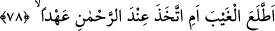
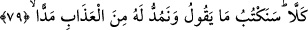
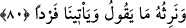

78. O gaybı mı biliyor, yoksa Rahman’ın katından bir söz mü aldı?
“O gaybı mı biliyor”; yani, onun durumu, sadece her şeyi bilen ve her şeyden
haberdar olan Allâh’a âid olan gaybı bilmeye yükselecek kadar mı yüceldi ki, âhirette
kendisine mal ve evlâd verileceğini iddiâ etti ve buna yemin etti?
“Yoksa Rahman’ın katından bir söz mü aldı?” Ya da gayb âleminden buna dâir bir
söz mü aldı? Çünkü âhirette mal veya evlâd sahibi olacağına dâir bilgi, ancak bu iki
yoldan birisiyle elde edilir: Ya gayb âleminden veya bilen birinden söz almakla. Âyette
geçen “el-ahd (söz)”in kelime-i şehâdet veya sâlih amel demek olduğu da söylenmiştir.
Çünkü Allâh’ın bu iki şeye sevab vaadi, kesin söz gibidir.
79. Hayır, biz onun dediğini yazacağız ve onun için azabı uzattıkça uzatacağız.
“Hayır” iş onun dediği gibi değildir. “Biz onun dediğini” söylediği yalan, küfür ve
alayı “yazacağız” muhâfaza edecek ve onlar yüzünden onu cezâlandıracağız. “Ve” onun
iddiâ ettiği mal ve evlâd yerine “onun için azabı uzattıkça uzatacağız.” Hak ettiği
kadar uzun süre ona azab edeceğiz.
80. Onun dediğine biz vâris olacağız; kendisi, bize tek başına gelecek.
Ölümüyle birlikte “onun dediğine” yani onun dünyada sahip olduğu mal ve evlâda
“biz vâris olacağız.” Burada bildirilmektedir ki, anlatılanlardan başka onun söylediği
şeyi doğrulayacak hiçbir şey yoktur. el-İrşâd’da zikredildiği üzere ona verdiğimizi
çekip alacağız. El-Uyûn’da der ki: “Onu helâk edecek, malını ve çocuklarını başkasına
mîras bırakacağız.” Kâşifî der ki: “Kâfirlerin ‘Yarın kıyamet gününde bize mal ve evlâd
verilecek’ diye söyledikleri şeylere biz vâris olacağız.”
Kıyamet gününde “kendisi bize tek başına gelecek.” Ona bir şey verilmek şöyle
dursun, dünyada sahip olduğu mal ve evlâddan da ayrı kalacak ve onların hiçbiri ona
arkadaşlık etmeyecek.
Âyette işâret edilmektedir ki, gurur ehli (aldanmış kimseler), dünyada mal ve evlâda,
âhirette ise kurtuluş ve yüksek mertebelere sahip olmak gibi iki fazilete ereceklerini
iddiâ ederler. Tecerrüd ehlini ise kazanç elde etmeyi, kadın ve evlâdlar edinmeyi terk
ettiklerinden ötürü yadırgarlar. Onlar kendilerinin bunlarla Allah’tan uzak olma azabına